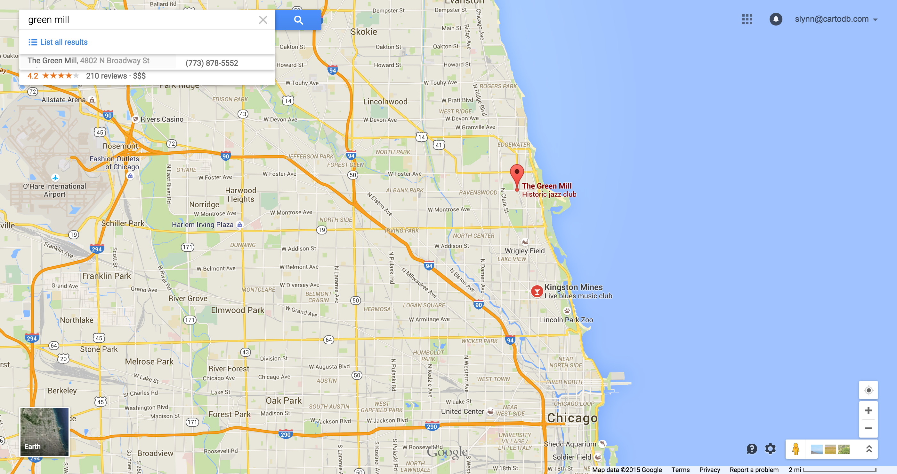
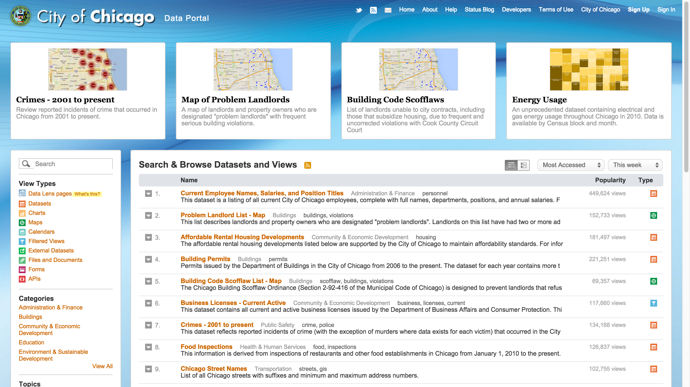
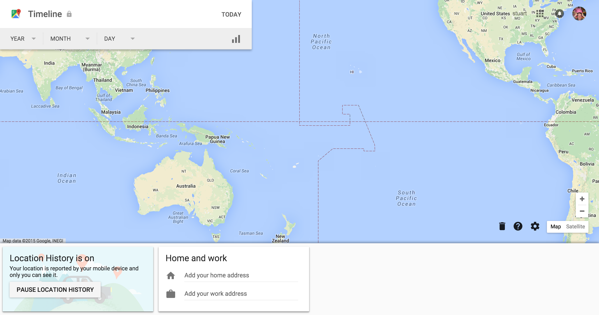
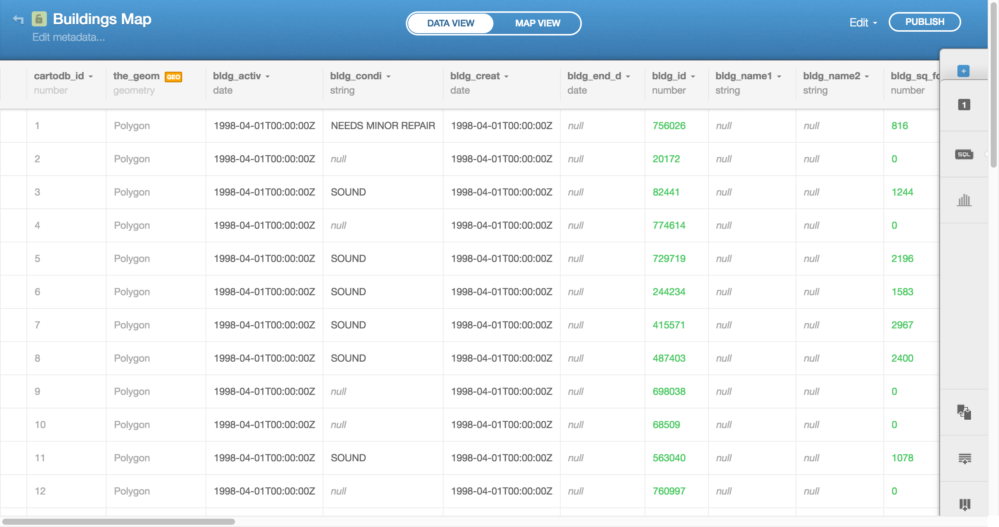

Intro to Web Mapping + GIS
Girl Develop It 26 Aug 2015
Created by Stuart Lynn / @stuart_lynn
Follow allong here : http://stuartlynn.github.io/GDIChicagoWorkshop/#/
Stuart Lynn
Map Scientist

+

=
Your guess is as good as mine
CartoDB

Maps are great!
Help us find places(bars)
Help us navigate to places(other bars)

Maps can also be beautiful


Points on a map
Choropleth
Directions of US rivers
Ages of buildings in Chicago
Even non-earth based maps
Where am I?
At the Girl Develop It meet up.
Where am I?
111 N. Canal St., Suite 455, Chicago, IL
Where am I?
41.883739, -87.639441
Where am I?
41° 53' 1.4604'' N, 87° 38' 21.9876'' W
Reads as 41 hours 53 minues 1.4 Seconds North, 87 degrees 28 minutes 21 seconds west
Components of web mapping
Maps in the age of the internet

Map Tiles
https://a.tiles.mapbox.com/v4/mapbox.streets/0/0/0.png

Map Tiles
1/0/0

1/1/0

1/0/1

1/1/1

Map Tiles - more info
http://wiki.openstreetmap.org/wiki/Slippy_map_tilenamesBase maps
http://leaflet-extras.github.io/leaflet-providers/preview/index.htmlVector data
Vector data
- Can be used to mark out regions
- Can be used to mark out points
- Provide interaction to your maps
Leaflet
Leaflet - starter kit
https://github.com/cugos/leaflet-starter- Clone/download the starter kit
- Select a base map from http://leaflet-extras.github.io/leaflet-providers/preview/index.html
- Update the starting location to lat: 41.8814 long: -87.6337
- Update the base map on leaflet
- Add some vector data from here
Open Layers
Can be more powerful but can also be more complicated
Google maps

Pretty straight forward but can be restrictive
Where to find data to map
Data formats - csv
Table of points with attributes
| lat | long | population | area |
|---|---|---|---|
| -20.23 | 10.443 | 300 | 20 |
| 0.33 | -23.333 | 55 | 2303 |
| 33.33 | -2.333 | 123 | 2 |
Data formats - csv
Table of points with attributes
| address | population | area |
|---|---|---|
| 180 South Michigan, Chicago, IL | 300 | 20 |
| 20 South Clark, Chicago, IL | 55 | 2303 |
| 1817 South Allport, Chicago, IL | 123 | 2 |
Note about geocoders
Geocoders are peices of software that turn adresses in to locations
MapZen's pelias https://mapzen.com/pelias
MapBox geocoder https://www.mapbox.com/developers/api/geocoding/
Google has an excelent geocoder but it can be restrictive
Data formats - geojson
http://geojson.io/Data formats - kml
Used a lot by google maps
Usually contains vector data and sometimes image overlays
Data formats - shapefiles
Vector data format from ESRI
Usually a zip file containing multiple files with endings like .shp .shx .dbf .sbn
Sources of Data: Natural Earth
http://www.naturalearthdata.com/Sources of Data: Chicago public data portal
 https://data.cityofchicago.orgSources of Data: Data.gov
http://www.data.gov/Sources of Data: Fulcrum
http://fulcrumapp.com/Sources of Data: Epicollect
http://www.epicollect.net/Sources of Data: Extract your location history from google
 https://www.google.com/maps/timelineMapping Platforms
Going to need this file: libraries.kml
Github
https://help.github.com/articles/mapping-geojson-files-on-github/
- Upload a geojson file as a gist Try this one
- Git hub will automatically create a map
- Use the embed link to get it on to your website
Map Box
- Go to https://www.mapbox.com
- Create an account
- Go to data
- Upload libraries.kml
CartoDB
- Going to make a map showing pothole reports in Chicago overlayed on bike tracks
- Pot Hole data
- Pot Hole data
Data
Query
SELECT * FROM buildings where shape_area > 100
Other resources
- CartoDB Map Academy http://academy.cartodb.com/
- CartoDB APIS http://docs.cartodb.com/cartodb-platform.html
- Similar talk in NY here
- Local data sources here
- National data sources here
Carto CSS
/** choropleth visualization */
#buildings{
polygon-fill: #91003F;
polygon-opacity: 0.8;
line-color: #FFF;
line-width: 0;
line-opacity: 1;
}
#buildings [ year_built <= 2013] {
polygon-fill: #F1EEF6;
}
#buildings [ year_built <= 1990] {
polygon-fill: #D4B9DA;
}
#buildings [ year_built <= 1967] {
polygon-fill: #C994C7;
}
#buildings [ year_built <= 1944] {
polygon-fill: #DF65B0;
}
#buildings [ year_built <= 1920] {
polygon-fill: #E7298A;
}
#buildings [ year_built <= 1897] {
polygon-fill: #CE1256;
}
#buildings [ year_built <= 1874] {
polygon-fill: #91003F;
}
Cartodb.js
Getting it on to your site